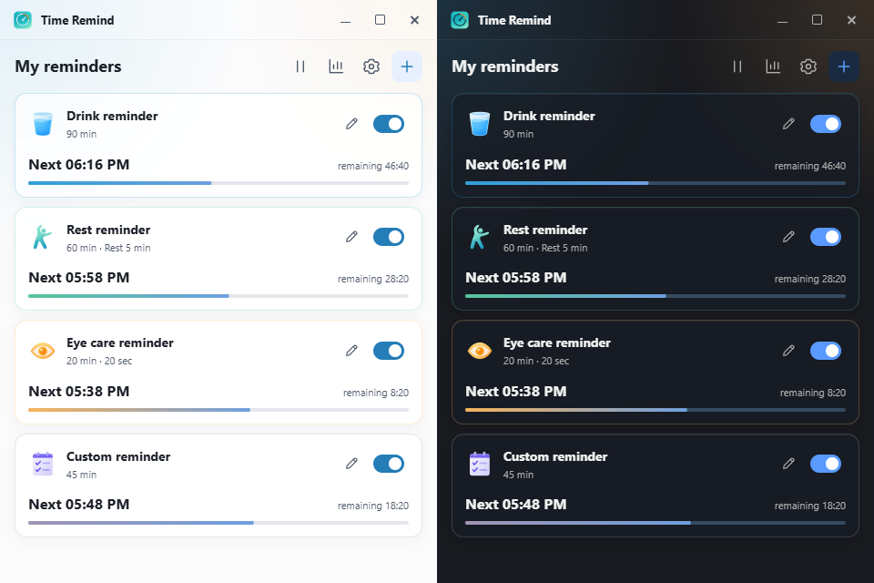
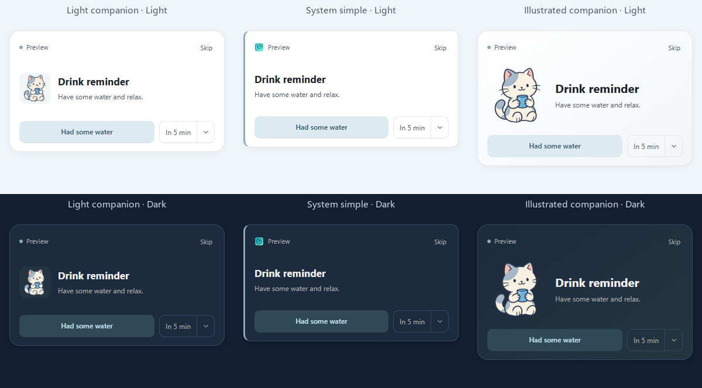
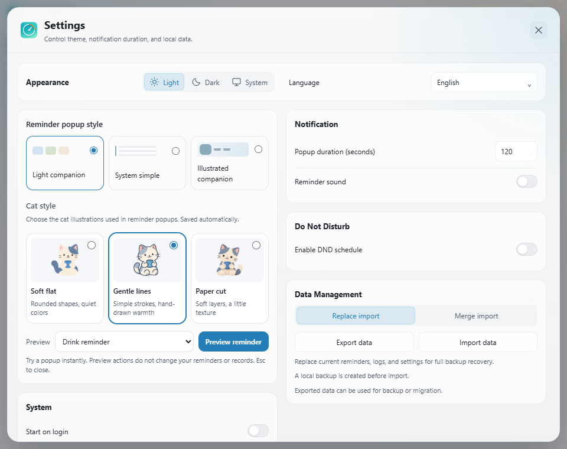

Three built-in reminders
Drink water, take a break, rest your eyes — ready out of the box, with custom names, messages, intervals and action countdowns.
Time Remind is a lightweight desktop wellness reminder built for people who sit in front of a computer all day. It stays out of your way and gently nudges you to take care of yourself.

Features
No account, no cloud sync, no background service. Your reminders and stats stay on your own machine.
Drink water, take a break, rest your eyes — ready out of the box, with custom names, messages, intervals and action countdowns.
Three popup styles, plus complete, snooze for five minutes, postpone by a saved duration, skip, and timeout handling.
Set focus or rest windows and reminders stay quiet, then resume on your own rhythm.
On Windows it detects true fullscreen presentations and games, then postpones reminders so nothing interrupts you.
Tray menu, start on login and silent startup — it waits quietly in the corner until you need it.
Daily stats, a trend chart and streak tracking turn consistency into something you can look back on.
Export and import your configuration in one click, so a new machine or a clean install starts where you left off.
All data is stored locally. No account is required and reminders never depend on a network service.
Interface
Soft category colours and three cat illustration styles, with reminder text that follows your language while preserving your edits.


Download
Windows is the verified release platform. macOS and Linux packages are community previews — real-device feedback is welcome.
Current release v0.1.11 · 3 platforms available
Windows Time-Remind_0.1.11_windows_x64_nsis.exe Download macOS Time-Remind_0.1.11_darwin_x64_dmg.dmg Download Linux Time-Remind_0.1.11_linux_amd64_deb.deb DownloadThe Windows installer is not code-signed yet, so SmartScreen may warn you once. Choose to run it anyway.
The installer's last page offers "Start with Windows" and optional silent startup to the tray. Both default off and can be changed later.
Adjust intervals, messages, sounds and Do Not Disturb, then minimise to the tray and let it work.
Releases
Every release ships with SHA256 checksums. The full history lives on GitHub Releases.
FAQ
No. There is no account system. Reminders, settings, logs and statistics are processed locally, and the core features do not depend on any network service.
The installer is not code-signed yet, so this is expected. Once you have confirmed the download came from this repository's Releases page, continue the installation.
You can install the preview packages, but those platforms are not verified: tray behaviour, autostart, lock detection and fullscreen handling still need real-device validation. Issues are welcome and that work is tracked publicly.
On Windows it detects true fullscreen and postpones reminders automatically. You can also configure a Do Not Disturb schedule manually.
Everything is stored locally. Before reinstalling or moving to another device, export your configuration from the settings page and import it afterwards.
Free and open source. Download it and go — no account needed.